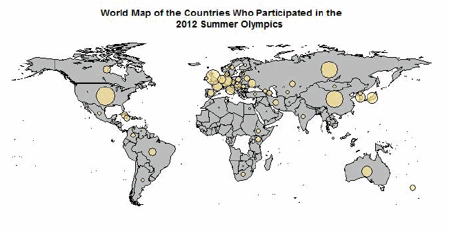
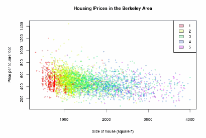
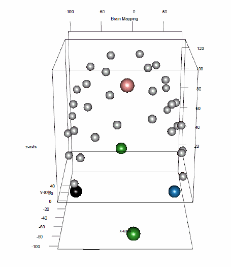

|
 |
Didn't you always want to learn the basics of R, its numerous
data structures (such as vectors, arrays, data frames, and lists),
see how the various apply commands outperform for-loops,
and understand how to create meaningful statistical graphics
step-by-step? If the answer to any of these questions is yes, you
should attend this 1-credit course!
|
|
Moreover, if you are planning to take any further graduate level
class that makes use of R, you should (or must) also take this class.
Several of the more advanced 6000- or 7000-level classes
in Statistics will require this class
as a prerequisite.
|
 |
|
 |
Please contact me in person, by phone, or by e-mail in case of
any questions.
But act soon! Since we will be using an electronic classroom where each student will sit in front of his/her own computer, the class size is very limited. We will hold an organizational meeting on Monday 1/14/2013 at 5pm in AnSc 314. Lectures will take place during weeks 2, 3, and 4 of the Spring 2013 semester. We will meet 3 times per week for 75 min each time. The exact lecture dates and times will be determined based on your availability information provided during the organizational meeting. If you can't attend this meeting, please contact me by e-mail as soon as possible. |